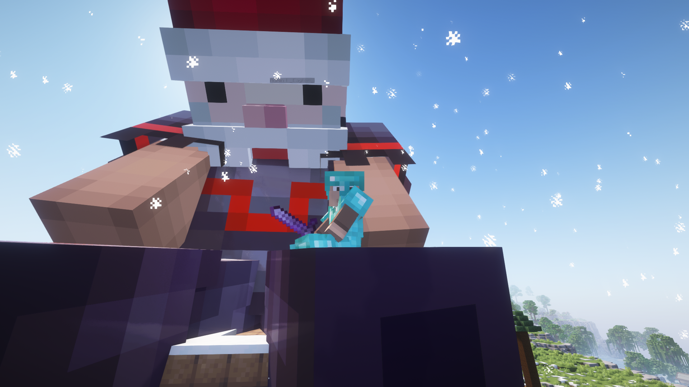
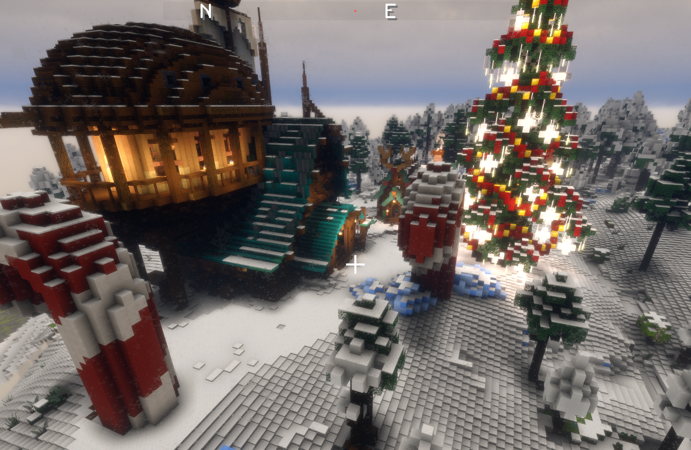
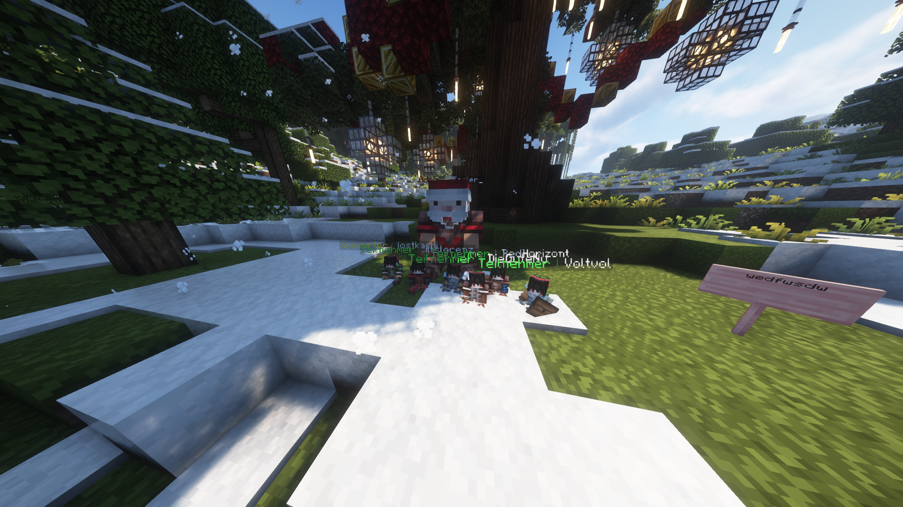

Willkommen im Dorf.
Minecraft Winter Village geht in die neunte Runde. Ein Projekt von Freunden für Freunde. Wir bauen, handeln und überleben gemeinsam. Ein Projekt für die Community.
Das erwartet dich dieses Jahr
🎫 Wildcards
Aktivität wird belohnt. Content Creator und aktive Spieler erhalten Wildcards, um ihre Community oder Freunde auf den Server zu holen.
⚖️ Handel
Ein funktionierendes Wirtschaftssystem. Erstelle eigene Shops und handele mit anderen Spielern. Verdiene Geld indem du Items verkaufst.
❄️ Advent
Jeden Tag öffnet sich ein Türchen im Adventskalender mit "SpecialItems", die einzigartige Mechaniken ins Spiel bringen.
🏠 Grundstücke
Schütze deine Bauwerke einfach und effektiv. Verwalte Rechte für Freunde direkt über Befehle.
Eindrücke



Handbuch.
Die wichtigsten Befehle zum Nachschlagen.
Welten Management
/bauwelt
Bringt dich in die Bauwelt.
/farmwelt normal | nether | end
Teleporte dich in die Farmwelten. ⚠️ Diese Welten werden regelmäßig zurückgesetzt. Nether und End werden im Verlauf des Projekts freigeschalten!
Grundstücke (Plots)
Sicherung funktioniert über das Markieren von zwei Eckpunkten mit einer Holzaxt.
Die meisten Commands funktionieren wenn du auf einem Plot stehst.
/plot setup
Setup-Modus aktivieren (gibt dir die Holzaxt).
/plot create <NAME>
Erstellt das Plot (Achtung: Kostet ab dem zweiten Plot WV$).
/plot confirm
Bestätigt die Erstellung des Plots.
/plot cancel
Bricht die Plot-Erstellung ab.
/plot showBorders
Zeigt Plot-Grenzen visuell an (Partikel). Toggle ein/aus.
/plot member add <SPIELER>
Fügt ein Mitglied zu deinem Plot hinzu (Baurechte).
/plot owner <SPIELER>
Ändert den Besitzer des Plots.
/plot info
Zeigt dir Infos zu dem Plot an, auf welchem du stehst.
/plot delete
Löscht ein Plot.
Wirtschaft & Shops
/transfer <SPIELER> <SUMME>
Überweist dem angegebenen Spieler die Summe an WV$.
/balance
Zeigt deinen Kontostand an.
/transactions <SEITE>
Zeigt deine Transaktionen an. 5 pro Seite.
Shop erstellen
Platziere ein Schild und beschrifte es wie folgt:
SHOP-NAME
PREIS-PRO-STÜCK
Danach mit dem Verkaufs-Item auf das Schild rechtsklicken.
Wenn du dann deinen Shop öffnest (rechtsklick), kannst du den Bestand auffüllen und entleeren.
Adventskalender
/calendar & /ak
Öffnet das Adventskalender-GUI.
[ak]
Alternativ Schild platzieren und rechtsklicken.